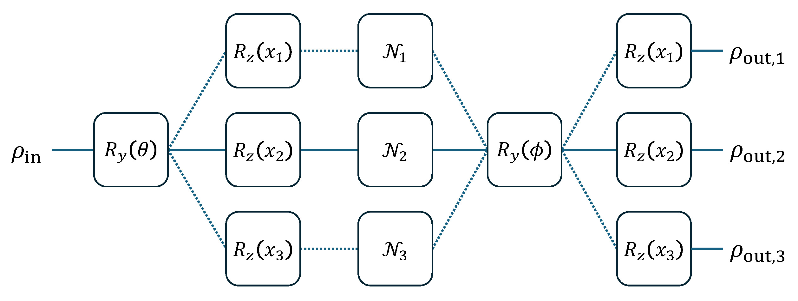

Batch Computation¶
This tutorial involves how to use batch computation to simplify a series of inputs in QuAIRKit.
Table of Contents - Batch computation in quantum circuit - Batch computation in measurement
[1]:
import torch
import quairkit as qkit
from quairkit import Circuit
from quairkit.database import *
from quairkit.loss import ExpecVal, Measure
qkit.set_dtype("complex128")
Batch computation in quantum circuit¶
Circuit class in QuAIRKit supports add batched parameters and gates to the circuit.
For parameterized gates like \(R_x(\theta)\), \(R_y(\theta)\), \(R_z(\theta)\), one can add batched parameters to the circuit by passing a 3-dimensional tensor to gate function, where the 3 dimensions are:
len(qubits_idx) : the number of qubits acted by the gates;
batch_size : the number of batched parameters;
num_acted_param : the number of parameters that characterize the gate. For example, num_acted_param for Ry gate is 1 and that for universal three qubit gate is 15.
Here is an example of batched parameters as an input onto a parameterized quantum circuit.
[2]:
num_qubits = 2
batch_size = 3
list_x = torch.rand(num_qubits * batch_size * 1) # num_acted_param=1
cir = Circuit(num_qubits)
cir.rx(param=list_x) # set Rx gate
print(f"Quantum circuit output: {cir()}")
# this is equivalent to below code
# for x in list_x:
# cir_1 = Circuit(1)
# cir_1.rx(param=x)
# print(f"Quantum circuit output for adding one Rx gate: {cir()}")
Quantum circuit output:
---------------------------------------------------
Backend: state_vector
System dimension: [2, 2]
System sequence: [1, 0]
Batch size: [3]
# 0:
[ 0.95+0.j 0. -0.29j 0. -0.14j -0.04+0.j ]
# 1:
[ 0.87+0.j 0. -0.46j 0. -0.17j -0.09+0.j ]
# 2:
[ 0.98+0.j 0. -0.05j 0. -0.19j -0.01+0.j ]
---------------------------------------------------
For oracles stored as torch.Tensor, one can add batched matrices to the circuit by oracle or control_oracle.
[3]:
cir_ora = Circuit(2)
list_unitary = random_unitary(1, size=batch_size)
print(f"The shape of oracle unitary: {list_unitary.shape}")
cir_ora.oracle(list_unitary, [1])
print(f"Quantum circuit output: {cir_ora()}")
# this is equivalent to below code
# for idx, unitary in enumerate(list_unitary):
# cir_ora2 = Circuit(2)
# cir_ora2.oracle(unitary, [1])
# print(f"Quantum circuit {idx}: {cir_ora2()}")
The shape of oracle unitary: torch.Size([3, 2, 2])
Quantum circuit output:
---------------------------------------------------
Backend: state_vector
System dimension: [2, 2]
System sequence: [1, 0]
Batch size: [3]
# 0:
[-0.41+0.38j 0. +0.j -0.11-0.82j 0. +0.j ]
# 1:
[0.51+0.52j 0. +0.j 0.69+0.06j 0. +0.j ]
# 2:
[ 0.84-0.01j 0. +0.j -0.25+0.48j 0. +0.j ]
---------------------------------------------------
QuAIRKit also supports batched channels through batching their Kraus or Choi operators. One can add batched channels to the circuit via kraus_channel or choi_channel. Notice that Kraus representation is recommended in batch computation.
[4]:
cir_kra = Circuit(2)
list_kraus = random_channel(num_qubits=1, size=batch_size)
cir_kra.kraus_channel(list_kraus, [0])
print(f"Kraus channel: {cir_kra()}")
output_state = cir_kra()
# this is equivalent to below code
# for idx, kraus in enumerate(list_kraus):
# cir_kra2 = Circuit(2)
# cir_kra2.kraus_channel(kraus, [0])
# print(f"Kraus channel {idx}: {cir_kra2()}")
Kraus channel:
---------------------------------------------------
Backend: density_matrix
System dimension: [2, 2]
System sequence: [0, 1]
Batch size: [3]
# 0:
[[0.66+0.j 0. +0.j 0.3 -0.j 0. +0.j]
[0. +0.j 0. +0.j 0. +0.j 0. +0.j]
[0.3 +0.j 0. +0.j 0.34+0.j 0. +0.j]
[0. +0.j 0. +0.j 0. +0.j 0. +0.j]]
# 1:
[[0.82+0.j 0. +0.j 0.3 -0.08j 0. +0.j ]
[0. +0.j 0. +0.j 0. +0.j 0. +0.j ]
[0.3 +0.08j 0. +0.j 0.18+0.j 0. +0.j ]
[0. +0.j 0. +0.j 0. +0.j 0. +0.j ]]
# 2:
[[ 0.35+0.j 0. +0.j -0.43+0.17j 0. +0.j ]
[ 0. +0.j 0. +0.j 0. +0.j 0. +0.j ]
[-0.43-0.17j 0. +0.j 0.65+0.j 0. +0.j ]
[ 0. +0.j 0. +0.j 0. +0.j 0. +0.j ]]
---------------------------------------------------
[5]:
cir_cho = Circuit(2)
list_choi = random_channel(num_qubits=1, target="choi", size=batch_size)
cir_cho.choi_channel(list_choi, [1])
print(f"Choi channel: {cir_cho()}")
# this is equivalent to below code
# for idx, choi in enumerate(list_choi):
# cir_cho2 = Circuit(2)
# cir_cho2.choi_channel(choi, [0])
# print(f"Choi channel {idx}: {cir_cho2()}")
Choi channel:
---------------------------------------------------
Backend: density_matrix
System dimension: [2, 2]
System sequence: [0, 1]
Batch size: [3]
# 0:
[[0.07+0.j 0.11-0.24j 0. +0.j 0. +0.j ]
[0.11+0.24j 0.93+0.j 0. +0.j 0. +0.j ]
[0. +0.j 0. +0.j 0. +0.j 0. +0.j ]
[0. +0.j 0. +0.j 0. +0.j 0. +0.j ]]
# 1:
[[ 0.54+0.j -0.44-0.23j 0. +0.j 0. +0.j ]
[-0.44+0.23j 0.46+0.j 0. +0.j 0. +0.j ]
[ 0. +0.j 0. +0.j 0. +0.j 0. +0.j ]
[ 0. +0.j 0. +0.j 0. +0.j 0. +0.j ]]
# 2:
[[ 0.27+0.j -0.14+0.42j 0. +0.j 0. +0.j ]
[-0.14-0.42j 0.73+0.j 0. +0.j 0. +0.j ]
[ 0. +0.j 0. +0.j 0. +0.j 0. +0.j ]
[ 0. +0.j 0. +0.j 0. +0.j 0. +0.j ]]
---------------------------------------------------
Mathematical property of Kraus operators is checked.
One can then check that this circuit preserves the trace.
[6]:
tr = output_state.trace()
torch.allclose(tr, torch.ones_like(tr))
[6]:
True
For clarity, the following figure illustrates how batch computation works in quantum circuits.

Fig.1: Depiction of batched quantum circuits on single input state.
The code of these circuits is given as follows
[7]:
rho = random_state(1)
list_x = torch.rand(batch_size)
list_depo = torch.stack(
[depolarizing_kraus(torch.rand(1)) for _ in list(range(batch_size))]
)
batch_cir = Circuit(1)
batch_cir.ry()
batch_cir.rz(param=list_x)
batch_cir.kraus_channel(list_depo, 0)
batch_cir.ry()
batch_cir.rz(param=list_x)
print(f"Output state: {batch_cir(rho)}")
Output state:
---------------------------------------------------
Backend: density_matrix
System dimension: [2]
System sequence: [0]
Batch size: [3]
# 0:
[[0.44-0.j 0.04+0.05j]
[0.04-0.05j 0.56+0.j ]]
# 1:
[[0.27+0.j 0.25+0.22j]
[0.25-0.22j 0.73+0.j ]]
# 2:
[[0.45+0.j 0.13+0.03j]
[0.13-0.03j 0.55+0.j ]]
---------------------------------------------------
Batch computation in measurement¶
Measurement in QuAIRKit also support batch computation. We start with an observable represented by Hamiltonian and a projection valued measure (PVM).
[8]:
H = random_hamiltonian_generator(num_qubits)
print(f"Hamiltonian: {H.pauli_str}")
Hamiltonian: [[-0.09066232223158144, 'Z0'], [-0.7931476010024183, 'X1'], [0.7190023895147757, 'Y0']]
One can call the expec_val of State class, or implement the neural network module ExpecVal on batched states.
[9]:
print(f"Output state: {output_state}")
op = ExpecVal(H)
print(f"expectation value: {op(output_state)}")
# this is equivalent to below code
# for state in output_state:
# print(f"expectation value of each: {op(state)}")
print(f"expectation value: {output_state.expec_val(H)}")
# return the expectation value of each Pauli term
print(
f"expectation value of each Pauli term: {output_state.expec_val(H, decompose=True)}"
)
Output state:
---------------------------------------------------
Backend: density_matrix
System dimension: [2, 2]
System sequence: [0, 1]
Batch size: [3]
# 0:
[[0.66+0.j 0. +0.j 0.3 -0.j 0. +0.j]
[0. +0.j 0. +0.j 0. +0.j 0. +0.j]
[0.3 +0.j 0. +0.j 0.34+0.j 0. +0.j]
[0. +0.j 0. +0.j 0. +0.j 0. +0.j]]
# 1:
[[0.82+0.j 0. +0.j 0.3 -0.08j 0. +0.j ]
[0. +0.j 0. +0.j 0. +0.j 0. +0.j ]
[0.3 +0.08j 0. +0.j 0.18+0.j 0. +0.j ]
[0. +0.j 0. +0.j 0. +0.j 0. +0.j ]]
# 2:
[[ 0.35+0.j 0. +0.j -0.43+0.17j 0. +0.j ]
[ 0. +0.j 0. +0.j 0. +0.j 0. +0.j ]
[-0.43-0.17j 0. +0.j 0.65+0.j 0. +0.j ]
[ 0. +0.j 0. +0.j 0. +0.j 0. +0.j ]]
---------------------------------------------------
expectation value: tensor([-0.0246, 0.0647, -0.2120])
expectation value: tensor([-0.0246, 0.0647, -0.2120])
expectation value of each Pauli term: tensor([[-0.0292, -0.0574, 0.0271],
[-0.0000, -0.0000, -0.0000],
[ 0.0047, 0.1221, -0.2391]])
Similarly, to measure the output state, one can call the measure of State class, or implement the neural network module Measure on batched states. The following code measures the second qubit of the output state.
[10]:
output_state = cir_kra()
basis = random_unitary(1).unsqueeze(-1)
pvm = basis @ basis.mH
print(f"The shape of PVM: {pvm.shape}")
op = Measure(pvm)
print(f"expectation value: {op(output_state, [0])}")
# this is equivalent to below code
# for state in output_state:
# print(f"expectation value: {op(state, [0])}")
print(f"expectation value: {output_state.measure(pvm, [0])}")
The shape of PVM: torch.Size([2, 2, 2])
expectation value: tensor([[0.3801, 0.6199],
[0.3868, 0.6132],
[0.4948, 0.5052]])
expectation value: tensor([[0.3801, 0.6199],
[0.3868, 0.6132],
[0.4948, 0.5052]])
One can also keep the collapsed states after the measurement by setting keep_state = True.
Table: A reference of notation conventions in this tutorial.
Symbol |
Variant |
Description |
|---|---|---|
\(R_{x/y/z}(\theta)\) |
rotation gates about the \(X\)/\(Y\)/\(Z\)-axis |
|
\(\rho_{\text{in}}\) |
input quantum state |
|
\(\rho_{\text{out}}\) |
\(\rho_{\text{out},1}\), \(\rho_{\text{out},2}\), \(\rho_{\text{out},3}\) |
output quantum state |
\(\mathcal{N}\) |
\(\mathcal{N}_1\), \(\mathcal{N}_2\), \(\mathcal{N}_3\) |
quantum channel |
[11]:
qkit.print_info()
---------VERSION---------
quairkit: 0.2.0
torch: 2.4.1+cpu
numpy: 1.26.0
scipy: 1.14.1
matplotlib: 3.9.2
---------SYSTEM---------
Python version: 3.10.15
OS: Windows
OS version: 10.0.26100
---------DEVICE---------
CPU: ARMv8 (64-bit) Family 8 Model 1 Revision 201, Qualcomm Technologies Inc